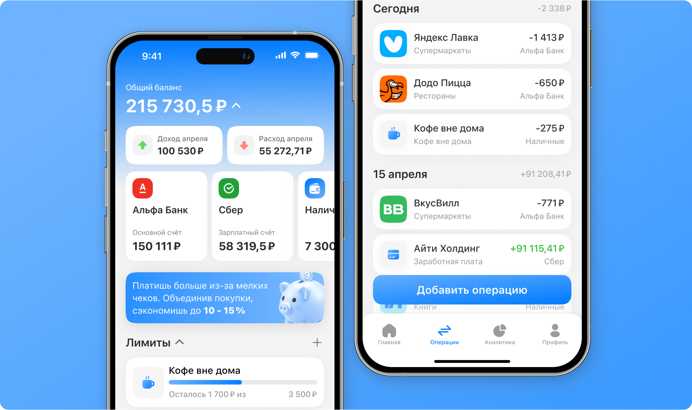
Привет! Я продуктовый дизайнер с 3-летним опытом работы в SaaS, Fintech и Edtech.
Проектирую mobile и web-интерфейсы для B2B и B2C-продуктов, работаю со сложными пользовательскими сценариями, состояниями и ограничениями продукта.
Места работы
InternetUrok Продуктовый дизайнернояб. 2025 → апр. 2026 EdTech-платформа для школьного онлайн-образования.
Optimacros Продуктовый дизайнердек. 2022 → июнь 2025 SaaS-платформа для планирования, бюджетирования и финансового моделирования.
Inchcape Специалист по финансовому планированию и анализуокт. 2020 → авг. 2022 Международная компания в сфере дистрибуции автомобилей премиум- и люкс-сегмента.
Ceetrus / NHOOD Младший финансовый аналитикфевр. 2018 → окт. 2020 Компания в сфере управления и развития недвижимости.
Кейсы
Концепты
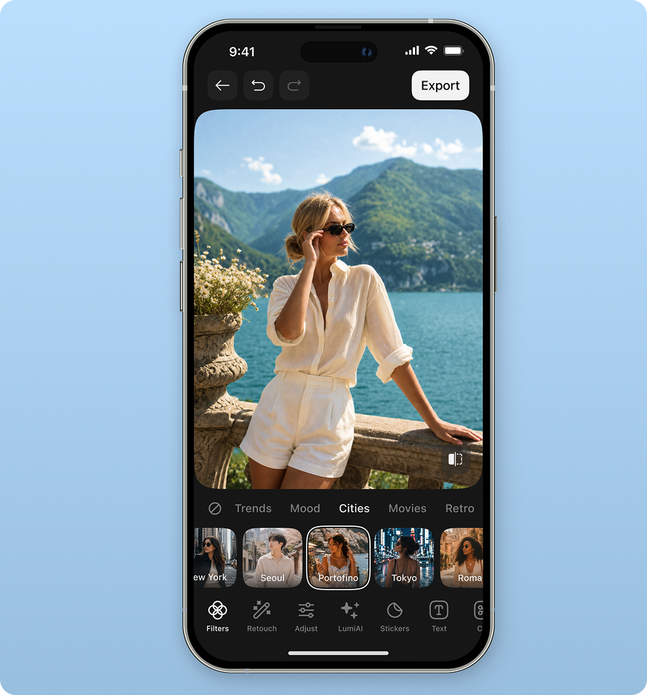
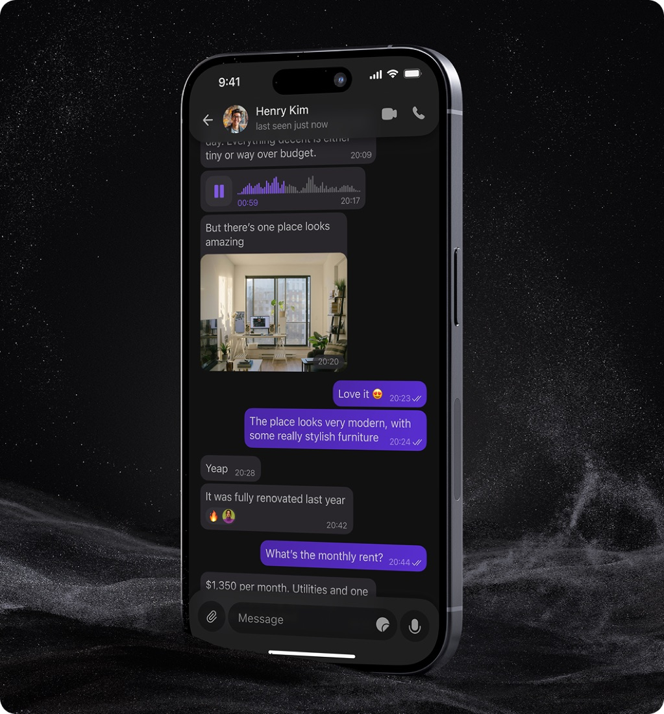
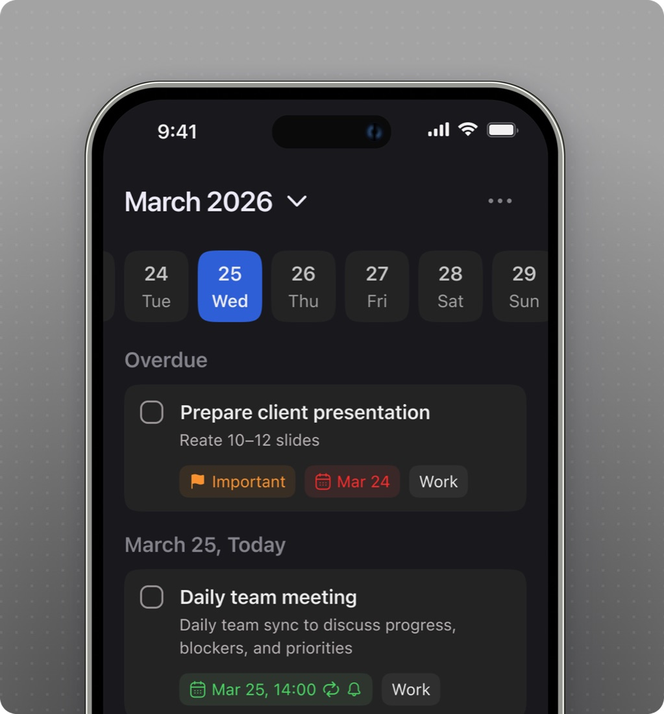
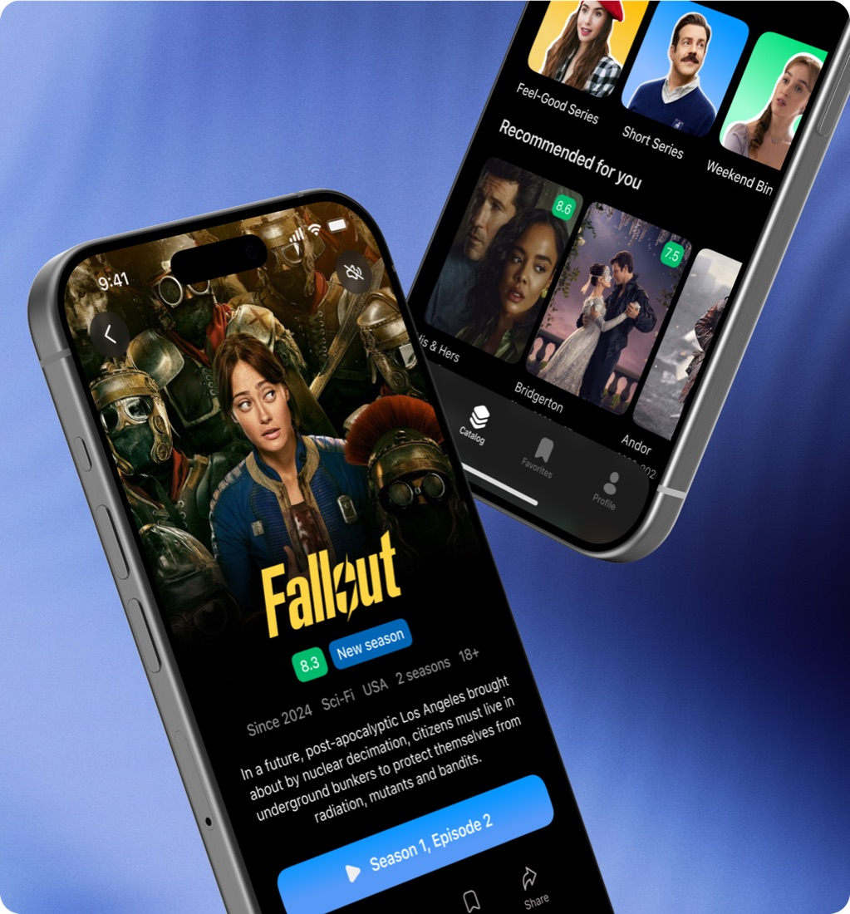
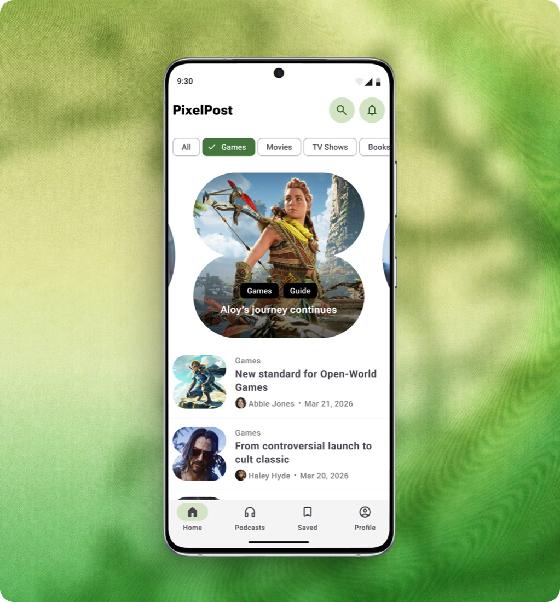
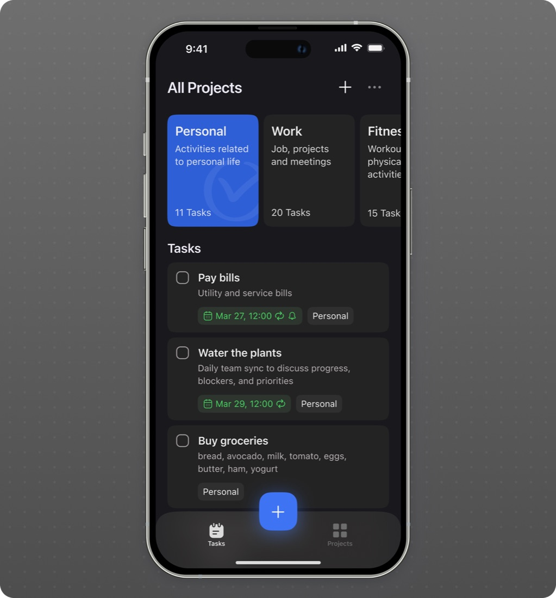
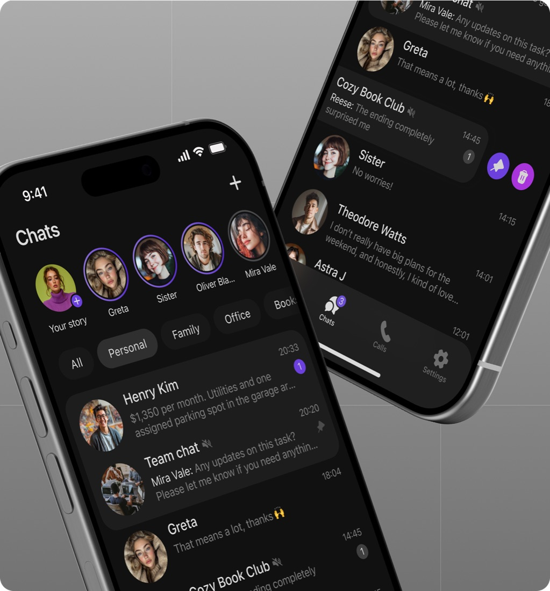
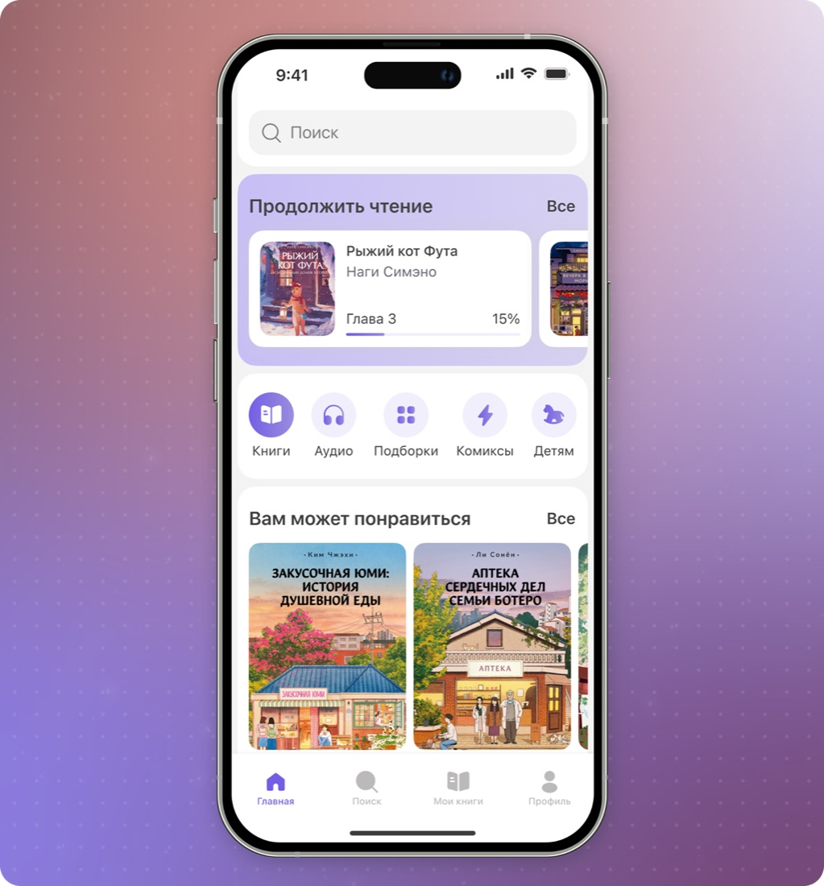
Социальные сети
Делюсь своими концептами интерфейсов в LinkedIn, Dribbble и Pinterest.
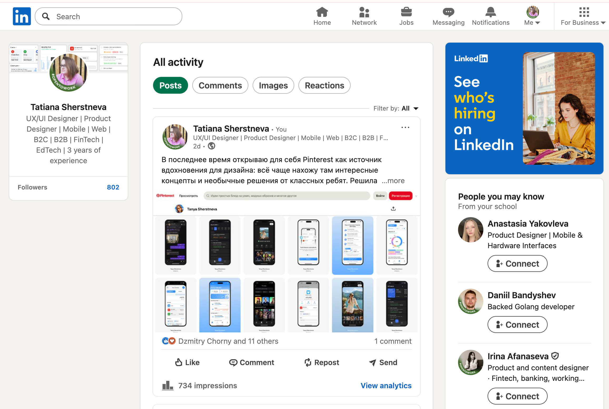
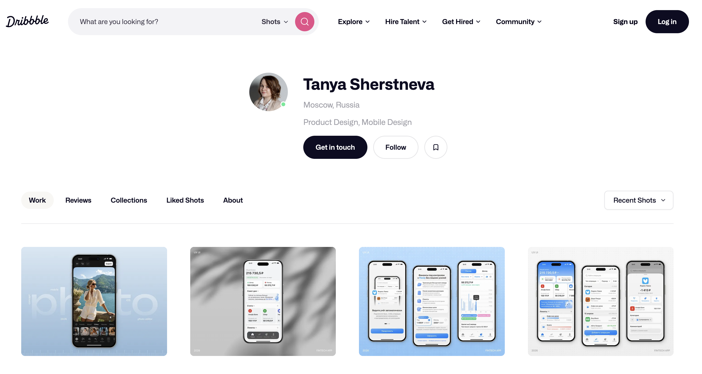
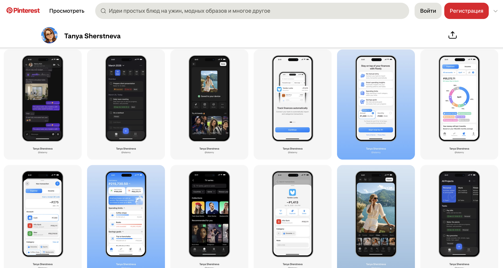